Fish & Chips
O prato da casa, em duas massas diferentes.

Sir Fisher — Fish & Chips
pescada amarela em crosta de panko, com batatas
Pescada amarela envolta em farinha panko, crocante por fora e suculenta por dentro. Acompanha batatas palito.
R$ 45,00200 g de peixe empanadoContém PEIXEContém GLÚTENContém OVOVer detalhes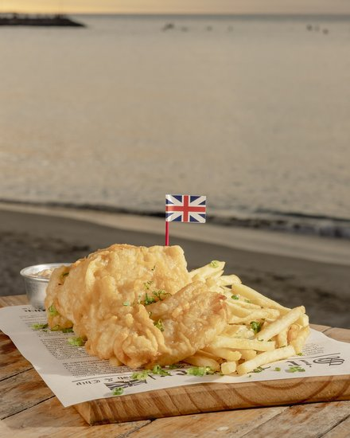
London — Fish & Chips
peixe em massa fermentada na cerveja, com batatas
Peixe envolto em leve massa fermentada na cerveja e frito até dourar. Acompanha batatas crocantes.
R$ 45,00200 g de peixe empanadoContém PEIXEContém GLÚTENContém OVOVer detalhes
Petiscos e porções
Para dividir na mesa enquanto a conversa corre.
Do mar
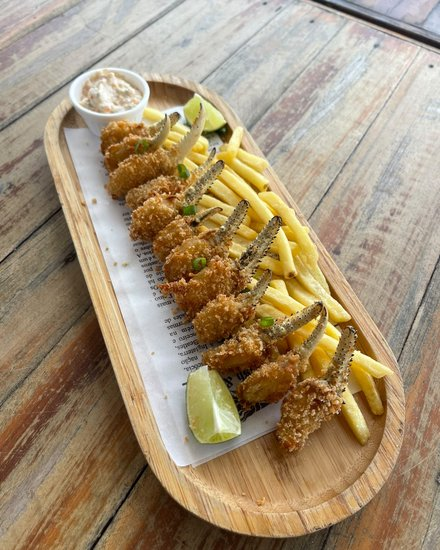
Patinha de Caranguejo
Patas empanadas e crocantes. Acompanha batata frita e molho da casa.
R$ 55,0010 unidadesContém GLÚTENContém LACTOSEContém CRUSTÁCEOSVer detalhes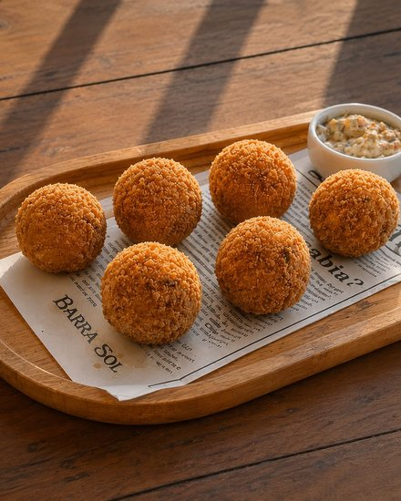
Bolinha de Peixe Cremosa
Seis bolinhas de pescada amarela com recheio cremoso de cream cheese.
R$ 44,006 unidades / 300 gContém GLÚTENContém LACTOSEContém PEIXEVer detalhes
NewCastle
camarões empanados com batatas
Crocantes por fora, em farinha panko. Inspirado nas ruas de Londres.
R$ 60,00250 gContém CRUSTÁCEOSContém GLÚTENContém OVOVer detalhes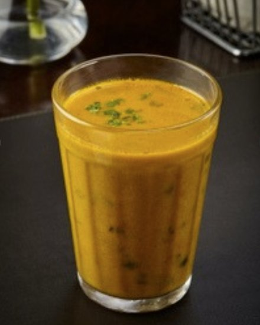
Caldo de Peixe
Caldo de pescada amarela, leve e cheio de sabor.
R$ 18,00200 mLContém GLÚTENContém PEIXEContém OVOVer detalhes
Camarão alho e óleo
Camarão G salteado no alho e óleo.
R$ 47,00300 gContém GLÚTENContém CRUSTÁCEOSVer detalhes
Isca de Peixe
Tiras de pescada amarela empanadas ao panko, com molho especial.
R$ 42,00250 gContém GLÚTENContém PEIXEContém OVOContém LACTOSEVer detalhes
Da terra
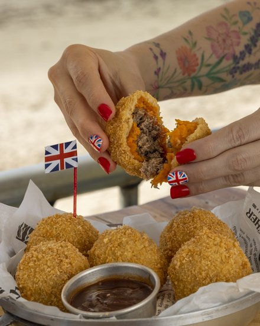
Crocante de Carne de Sol com Abóbora
Seis bolinhos crocantes em leve massa de abóbora, com recheio cremoso de carne de sol.
R$ 38,006 unidades / 360 gContém GLÚTENContém OVOContém LACTOSEVer detalhes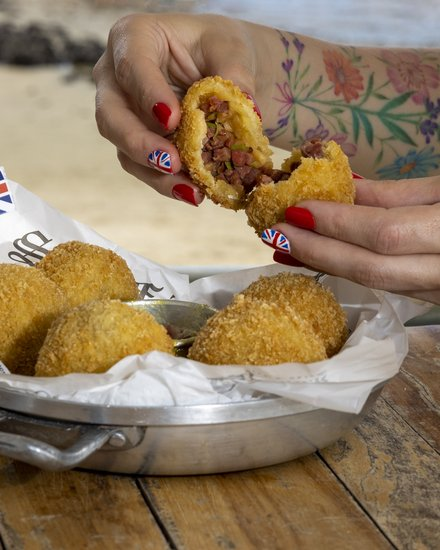
Crocante de Calabresa e Alho Poró
Seis bolinhos crocantes recheados com calabresa frita e alho-poró.
R$ 38,006 unidades / 360 gContém GLÚTENContém OVOContém LACTOSEVer detalhes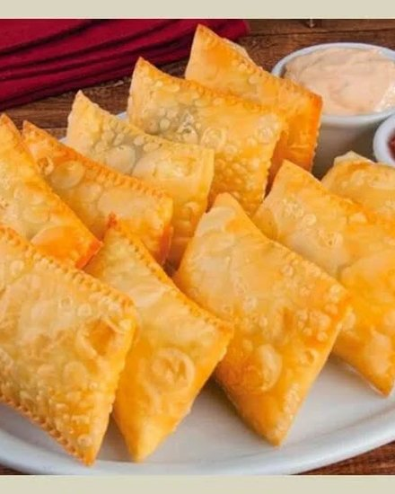
Pasteizinhos
Dez pastéis crocantes com molho especial. Sabor a escolher.
R$ 37,0010 unidadesContém LACTOSEContém CRUSTÁCEOSContém GLÚTENVer detalhes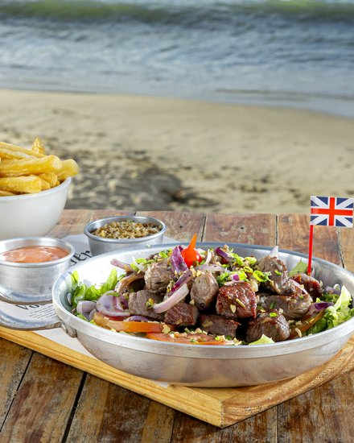
Filé Mignon Trinchado
Filé mignon acebolado, servido com batata frita ou macaxeira dourada.
R$ 84,00300 gContém GLÚTENVer detalhes
Dadinho de Tapioca
Doze dadinhos de tapioca crocantes por fora e macios por dentro, com molho especial.
R$ 29,0012 unidadesContém GLÚTENContém LACTOSEVer detalhes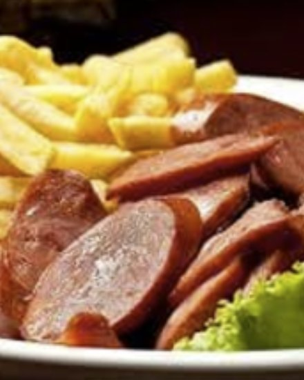
Calabresa Acebolada com Fritas
Calabresa acebolada com porção generosa de batata frita ou macaxeira crocante.
R$ 46,00250 gContém GLÚTENVer detalhes
Fritas e acompanhamentos
Sanduíches
Em pão brioche, servidos individualmente.
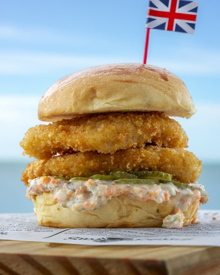
Fisher Burger
hambúrguer de pescada amarela empanada
Em pão brioche, com picles e molho especial.
R$ 37,00120 g de peixe empanadoContém GLÚTENContém PEIXEContém OVOContém LACTOSEAdicionar batata frita + R$ 9,90Ver detalhes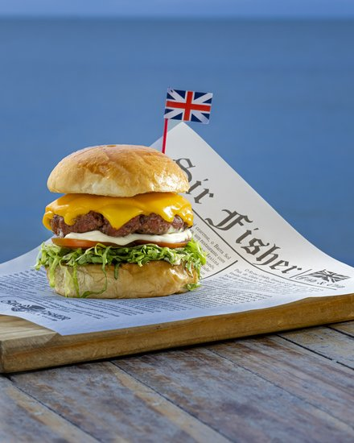
Edimburger
blend de 120 g de bovino com bacon
Em pão brioche, com alface, tomate, maionese especial e cheddar.
R$ 37,00120 g de carneContém GLÚTENContém OVOContém LACTOSEAdicionar batata frita + R$ 9,90Ver detalhes
Pratos para compartilhar
Servidos na travessa, com arroz, batata frita (ou macaxeira), salada, farofa e molho artesanal.
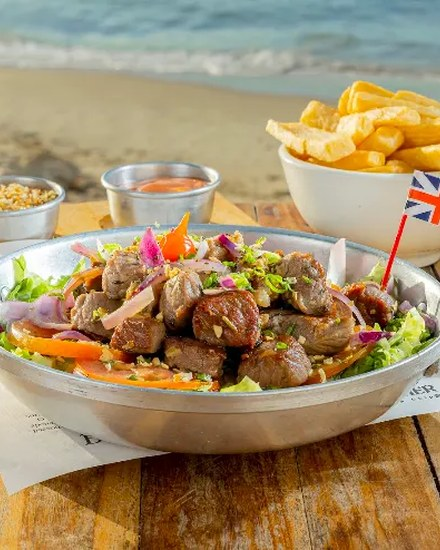
Filé Mignon
Filé mignon suculento, com molho madeira ou preparado ao alho e óleo.
R$ 90,00300 g de proteínaContém GLÚTENContém OVOArroz extra + R$ 12,00Ver detalhes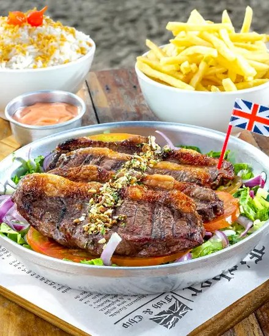
Picanha Importada
Picanha importada, grelhada no charbroil para realçar sabor e suculência.
R$ 99,00300 g de proteínaContém GLÚTENContém OVOArroz extra + R$ 12,00Ver detalhesFilé de Peixe Grelhado
Filé de pescada amarela grelhado, leve e cheio de sabor.
R$ 80,00300 g de proteínaContém GLÚTENContém OVOContém PEIXEArroz extra + R$ 12,00Ver detalhes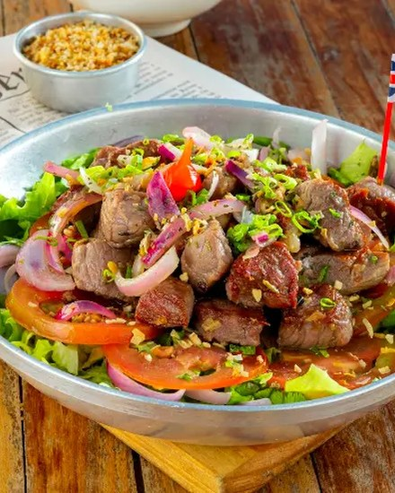
Carne de Sol Acebolada
Carne de sol de primeira, acompanhada de cebolas douradas.
R$ 88,00300 g de proteínaContém GLÚTENContém OVOArroz extra + R$ 12,00Ver detalhes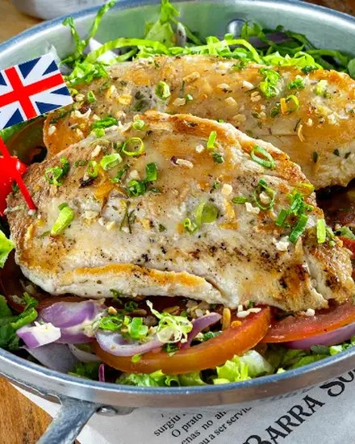
Peito de Frango com Ervas
Peito de frango temperado com ervas finas e grelhado no charbroil.
R$ 62,00300 g de proteínaContém GLÚTENContém OVOArroz extra + R$ 12,00Ver detalhes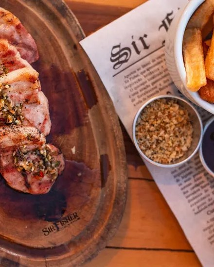
Picanha Suína
Picanha suína grelhada no charbroil.
R$ 67,00300 g de proteínaContém GLÚTENContém OVOArroz extra + R$ 12,00Ver detalhes
Sobremesas e café
Para fechar a conta com doce.
Cervejas e chope
Long neck, garrafa 600 e chope.
Chope Brahma
R$ 10,90300 mL · chope
Spaten Longneck
R$ 11,90355 mL · long neck
Stella Artois Longneck
R$ 12,90330 mL · long neck
Corona Longneck
R$ 14,90330 mL · long neck
Corona Zero Longneck
R$ 14,90330 mL · long neck
Spaten 600
R$ 19,40600 mL · garrafa
Original 600
R$ 19,40600 mL · garrafa
Stella Artois 600
R$ 21,40600 mL · garrafa
Corona 600
R$ 23,90600 mL · garrafa
Stella Pure Gold 600
R$ 23,90600 mL · garrafa
Coquetéis
Clássicos e criações da casa.
Caipirinha
300 mL · limão, açúcar e cachaça
- Cachaça nacionalR$ 18,00
- Ypióca 150R$ 22,00
Caipiroska
300 mL · limão, açúcar e vodka
- Vodka nacionalR$ 20,00
- SkyyR$ 22,00
- AbsolutR$ 28,00
Caipifruta
300 mL · vodka, açúcar e polpa de fruta
- Vodka nacionalR$ 22,00
- SkyyR$ 24,00
- AbsolutR$ 30,00
Gin Tônica
300 mL · gin, água tônica e toque cítrico
- Gin nacionalR$ 21,00
- Gordon'sR$ 23,00
Melancita
R$ 27,00300 mL · gin, energético de melancia e limão siciliano
Sherlock Holmes Gin
R$ 29,00300 mL · gin com energético e gengibre
Tropicall
R$ 27,00300 mL · vodka, energético tropical e limão siciliano
Margarita
R$ 29,00tequila, triple sec e limão
Fitzgerald
R$ 23,00300 mL · gin, limão, açúcar e bitter artesanal
Moscow Mule
R$ 26,00300 mL · vodka, gengibre e limão
Bebidas sem álcool
Águas, sucos, refrigerantes e energético.
Água sem gás
R$ 5,00500 mL
Água com gás
R$ 6,00500 mL
Água de Coco
R$ 5,00Copo 300 mL
Água Tônica
R$ 6,00350 mL
Refrigerante lata
R$ 8,00350 mL · sabor a escolher
Suco Copo
R$ 11,00330 mL · feito com polpa, sabor a escolher
Energético Red Bull
R$ 16,00269 mL
Soda Italiana
R$ 15,00300 mL · sem álcool, sabor a escolher
Sumo de Limão
R$ 3,0050 mL
Doses e aperitivos
Destilados em dose de 50 mL.
Teacher's
R$ 8,00Dose de 50 mL
Black & White
R$ 8,00Dose de 50 mL
Red Label
R$ 12,00Dose de 50 mL
Black Label
R$ 17,00Dose de 50 mL
Rum
R$ 8,00Dose de 50 mL
Campari
R$ 8,00Dose de 50 mL
Martini
R$ 7,00Dose de 50 mL
Vodka Nacional
R$ 7,00Dose de 50 mL
Vodka Skyy
R$ 9,00Dose de 50 mL
Vodka Absolut
R$ 15,00Dose de 50 mL
Gin Nacional
R$ 10,00Dose de 50 mL
Gin Gordon's
R$ 12,00Dose de 50 mL
Aperol
R$ 8,00Dose de 50 mL
Conhaque
R$ 7,00Dose de 50 mL
Cachaça Nacional
R$ 6,00Dose de 50 mL
Cachaça Ypióca 150
R$ 10,00Dose de 50 mL
Extras e serviços
Adicionais, itens de apoio e cobranças da casa.
Adicionais do prato
Molho Extra
R$ 3,00porção adicional de molho
Arroz Extra
R$ 12,00porção adicional de arroz
Adicional Salada
R$ 19,00porção adicional de salada
Itens de apoio
Cobranças
Legenda de alérgenos
Identificação dos principais ingredientes presentes nos itens do cardápio:
ALERGIA? AVISE ANTES DO PEDIDO: pode ter contaminação cruzada.